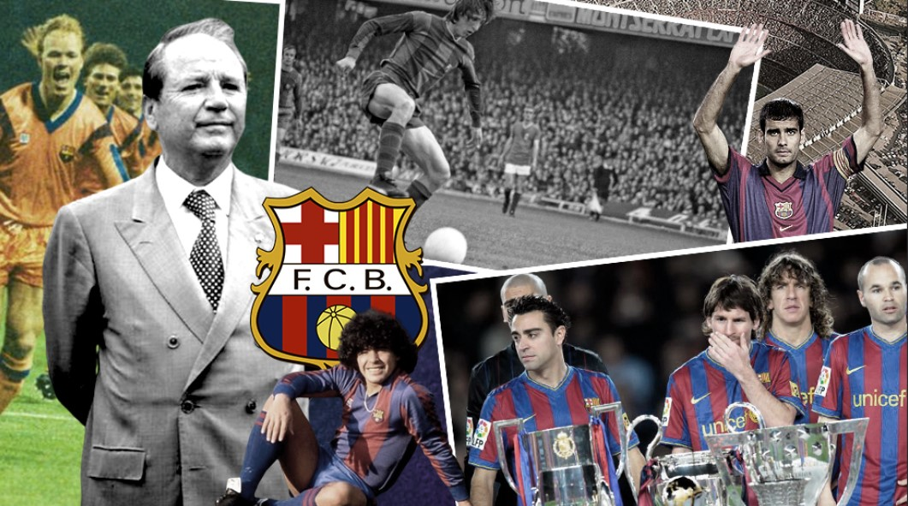
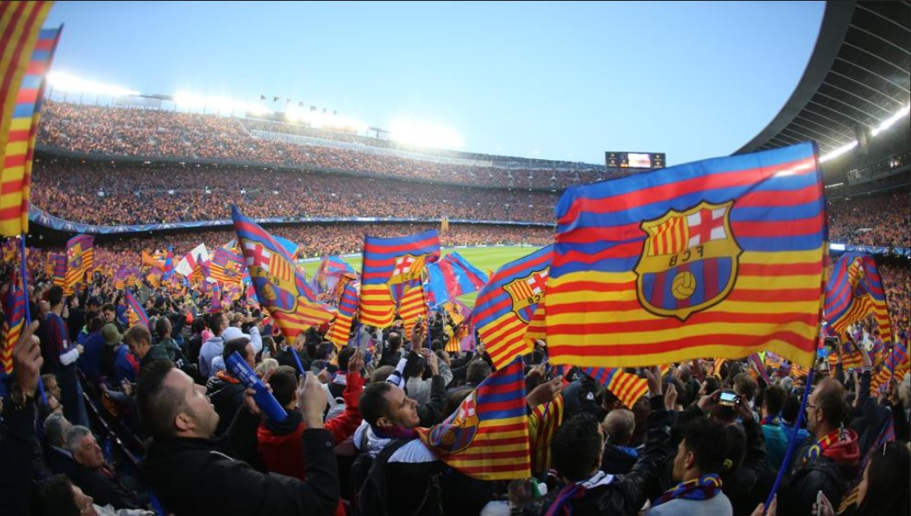

El Fútbol Club Barcelona , conocido popularmente como Barça,fue fundado como club de fútbol el 29 de noviembre de 1899
y registrado oficialmente el 5 de enero de 1903.

Una de las principales características del F. C. Barcelona es su carácter polideportivo.
Se distingue por ser una de las instituciones polideportivas más laureadas, entre las que destacan
sus secciones de fútbol, baloncesto, balonmano y hockey, todas ellas con un amplio palmarés europeo.
Es el primer club europeo en ser campeón continental en la rama masculina y femenina,
y el primero en lograr un triplete con ambas. Asimismo, los medallistas olímpicos que han representado
a la entidad blaugrana han conquistado once oros,veintitrés platas y veintiocho bronces en las distintas disciplinas deportivas.

El estadio del F. C. Barcelona es el Camp Nou, propiedad del propio club. Inaugurado en 1957,
tiene una capacidad de 99.354 espectadores, todos sentados. Es uno de los cuatro estadios de España catalogado como
«Estadio Cinco Estrellas» por la UEFA, lo que lo habilita para acoger finales de la Liga de Campeones,
Supercopa de Europa y Copa de la UEFA, como ha sucedido en 15 ocasiones. Se encuentra en el barrio de Las Corts de Barcelona,
junto a otras instalaciones del club, como el Mini Estadi (estadio del Barcelona B) y el Palau Blaugrana,
cancha del equipo de baloncesto. En las instalaciones del Camp Nou se encuentra el Museo del F. C. Barcelona, el museo más visitado de Cataluña.
Las vitrinas del museo barcelonista acogen todos los trofeos posibles, encabezados por las Copas de Europa
conseguidas en las finales de Wembley (1992 y 2011), París (2006), Roma (2009), Berlín (2015) y
el Mundial de Clubes de Abu Dhabi y Japón (2009, 2011 y 2015)
- Copa de Europa - 5
- Mundial de Clubs - 3
- Recopa de Europa - 4
- Copa de Ferias - 3
- Supercopa de Europa - 5
- Copa Latina - 2
- Copa de los Pirineos - 4
- Liga - 26
- Copa del Rey - 31
- Supercopa de España - 13
- Copa de la Liga - 2
- Liga Mediterránea - 1
- Liga Catalana - 1
- Campeonato de Catalunya - 23
- Supercopa Catalunya - 2
- Copa Catalunya - 8
- Copa Eva Duarte - 3